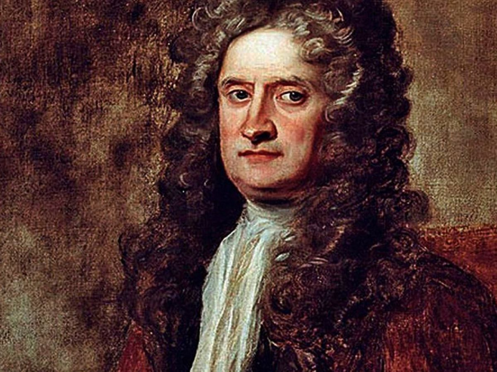

Hi, I'm Isaac Newton! 
I am a mathematician, physicist, astronomer, and author who is widely recognized as one of the most influential scientists of all time. I made groundbreaking contributions to many fields, including the laws of motion and universal gravitation. My work laid the foundation for classical mechanics, and I also made significant advancements in optics and calculus. I am passionate about understanding the natural world through scientific inquiry and dedicated my life to pushing the boundaries of human knowledge.